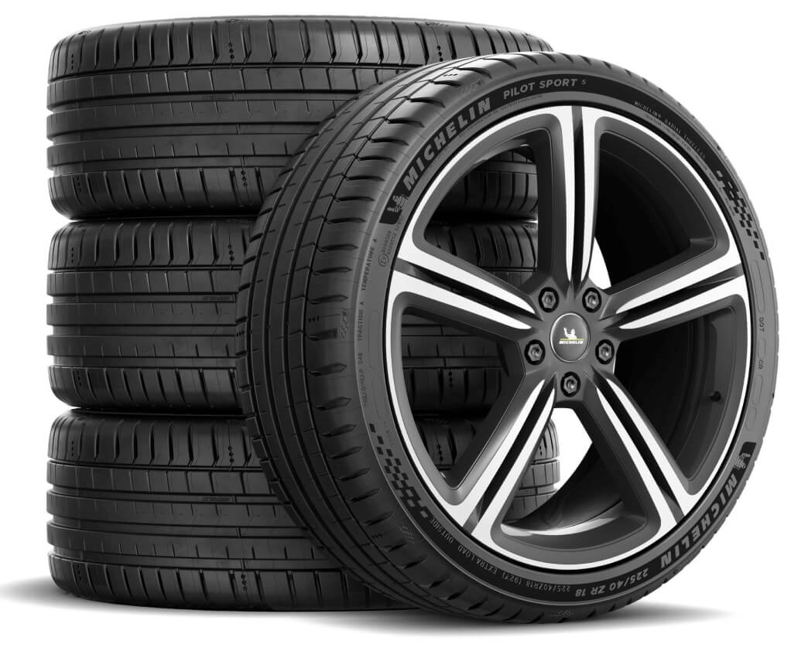
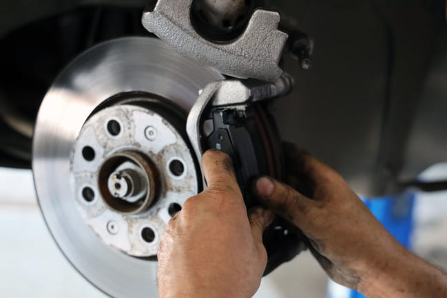
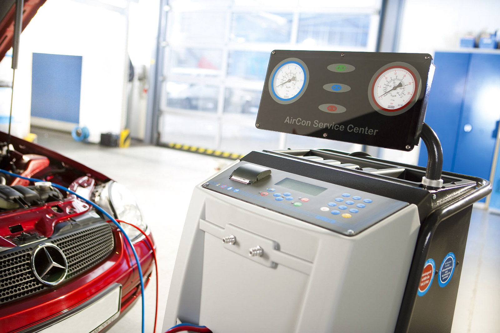
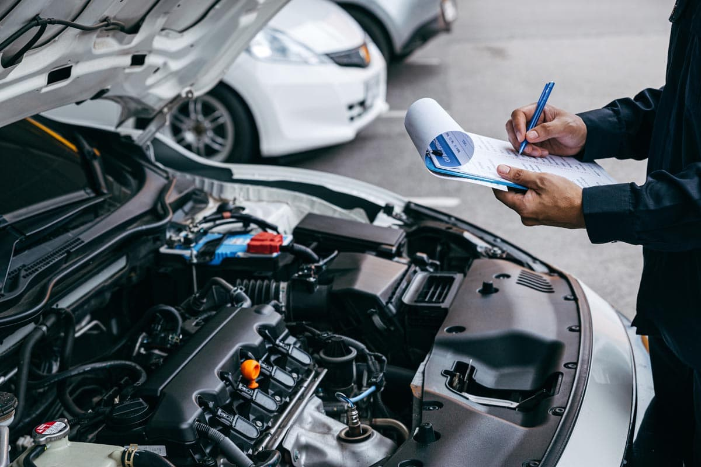
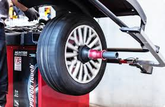
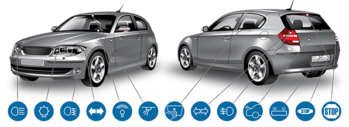
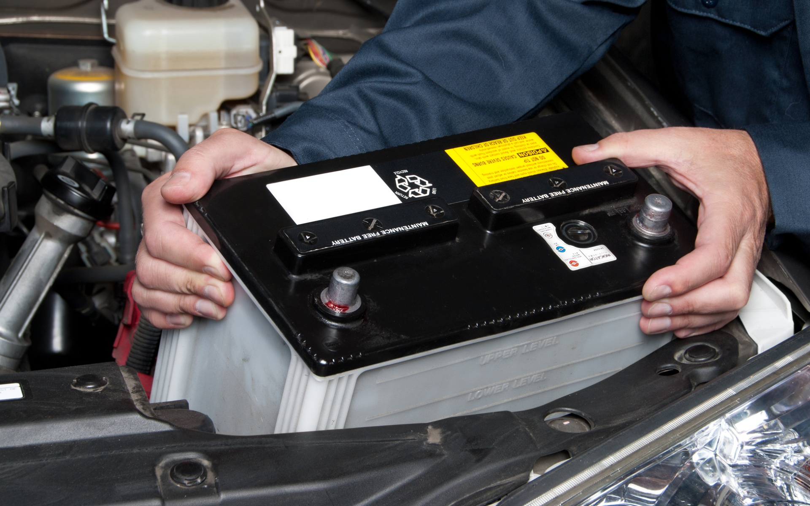
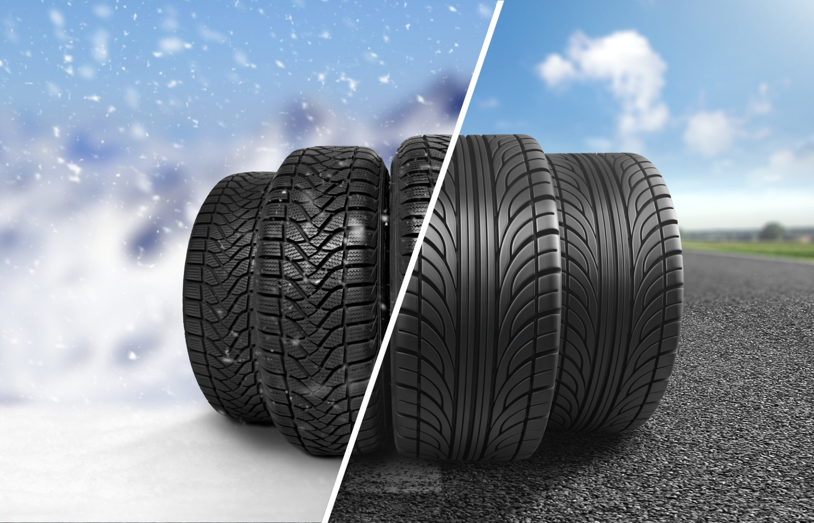

Onze Diensten

Nieuwe & Tweedehands Banden
Breed assortiment aan nieuwe en tweedehands banden voor alle voertuigen en seizoenen.

Remschijven Vervangen
Professionele vervanging van remschijven voor optimale veiligheid en remprestaties.

Airco Hervulling
Hervulling van R134A & R1234YF aircosystemen voor een optimaal klimaat in uw auto.

Onderhoud & Technische Controle
Complete onderhoudsservice en voorbereiding voor de technische keuring.

Koplampen Uitlijnen
Nauwkeurige uitlijning van uw koplampen voor optimaal zicht en veiligheid.

Banden Balanceren
Professioneel balanceren van uw banden voor optimaal weggedrag en bandenslijtage.

Vervanging Lampen & Batterijen
Snelle en vakkundige vervanging van alle soorten lampen.

Vervanging van Batterijen
Snelle en vakkundige vervanging van alle soorten batterijen.

Olie & Filter Vervanging
Complete service voor het vervangen van olie en alle filters van uw auto.

Seizoenswissel Banden
Professionele wissel van winter- naar zomerbanden en omgekeerd.